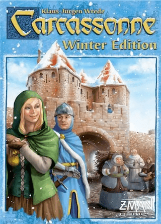
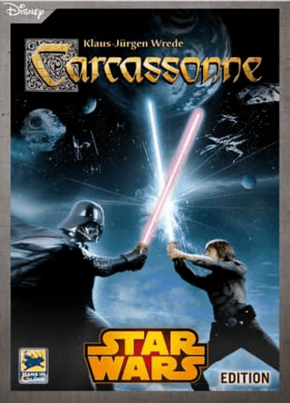

Inicio
Expansiones
Expansiones
Spin-Off
Mini Expansiones
Especiales
Reglas
Acerca de
Shop
Contacto
-- Seleccionar Juego --
Juego Base
Posadas y Catedrales
Constructores y Comerciantes
La Princesa y el Dragón
La Torre
La Abadía y el Alcalde
El Conde, el Rey y el Ladrón
La Catapulta
Mercados y Puentes
Colinas y Ovejas
El Circo
Las Máquinas Voladoras
Los Despachos
Los Transbordadores
Las Minas de Oro
El Mago y La Bruja
Los Ladrones
El Rio
Viernes - Mares del Sur
El Hombre de Jengibre - Edición Invierno

